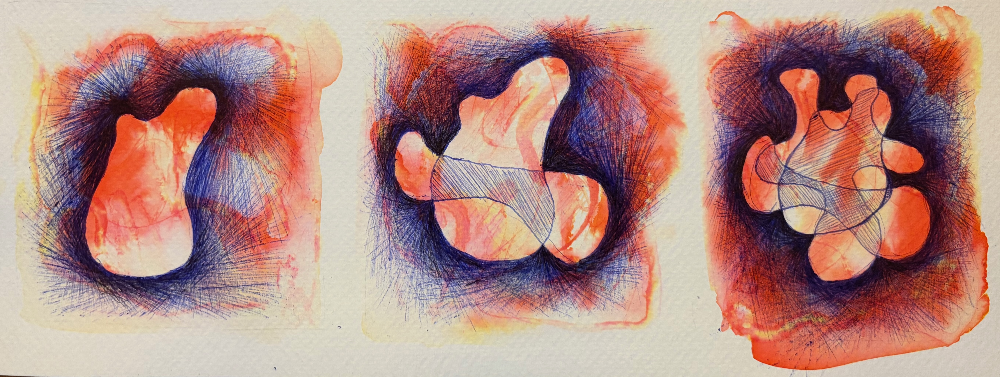
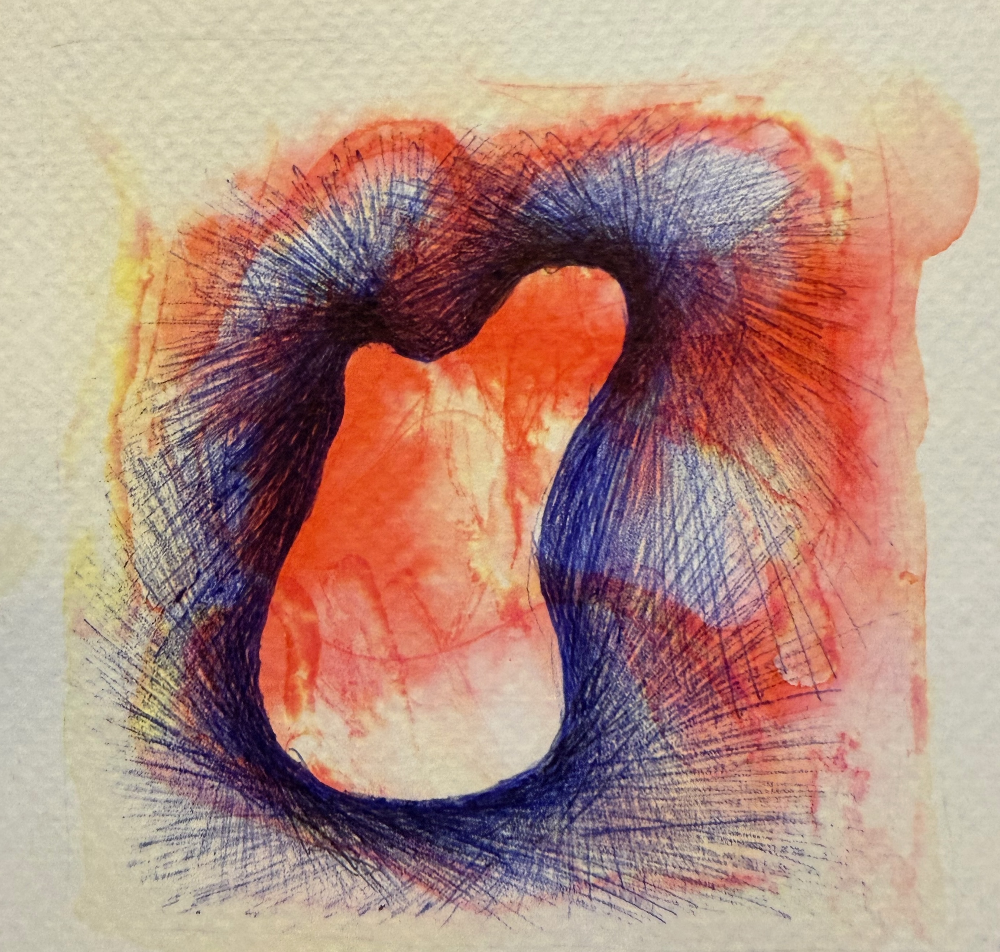
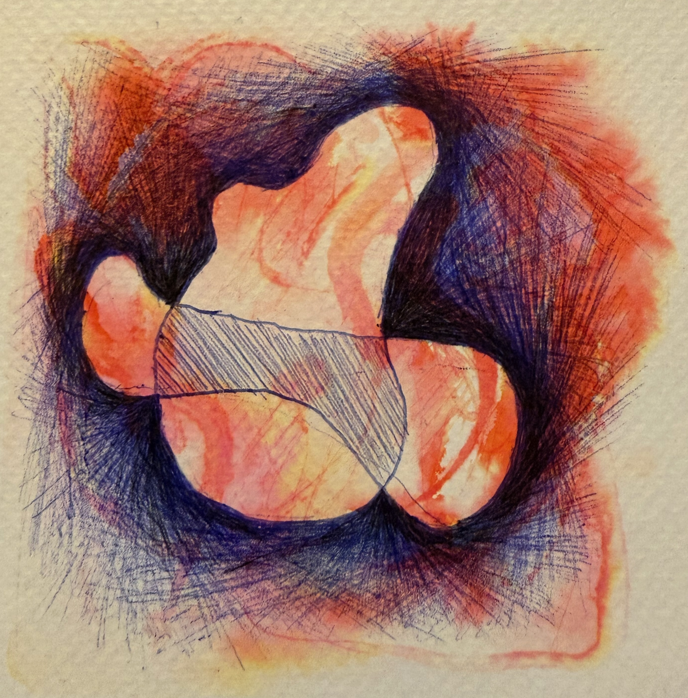
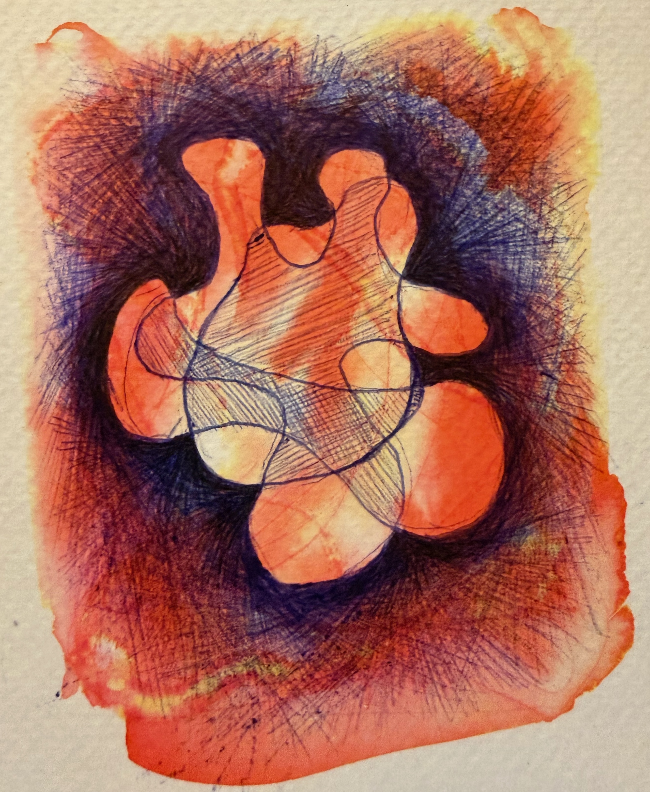
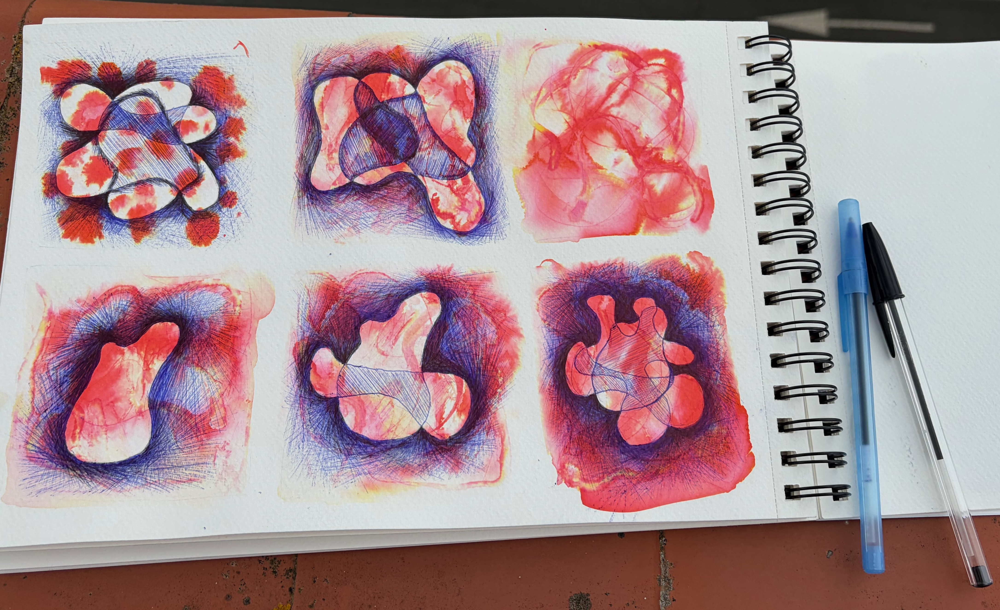

This drawing is one of the most meaningful pieces of art I have.
I first saw a similar style while studying abroad in Seville, Spain at the store El Perro, Arte & Libros. It's a second-hand bookstore where you pay by weight. The owner, Pablo, makes art while he runs the shop, and it's the most I've ever personally connected with someone's style.
Over the course of my 4 months living in Seville, I went regularly to see Pablo's art, oftentimes taking a long look at the same pieces from the week before. He kindly shared his approach, and I began to experiment with my own work. This is the first truly abstract art I have done, and it was a new artistic process to feel myself working through it and deciding what I wanted to make in the first place. The three overlapping shapes represent my siblings and I, and how we relate to one another.
The drawing is created with water, pen ink, isopropyl alcohol, and ball point pen. All on watercolor paper.




